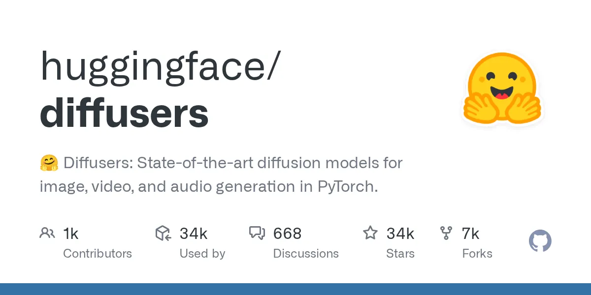

Score Network Architectures
The backbone evolution of reverse diffusion — from convolutional U-Net through DiT to hybrid rectified-flow transformers — annotated with metrics, code, and 52 citations.
- Contracting path: two 3×3 convs + ReLU + 2× max-pool per stage; expanding path mirrors with up-convolutions
- Skip connections concatenate encoder feature maps into the matching decoder stage — the spatial-detail preservation mechanism diffusion inherited
- Outputs same spatial size as input: natural noise-prediction network — no architectural modification needed to produce
ε_θ(xₜ, t) - Origin: biomedical image segmentation (Ronneberger et al., 2015); every diffusion U-Net borrows this skeleton verbatim
- Dhariwal & Nichol ran systematic ablations to turn U-Net into a class-conditional diffusion backbone that beat every GAN on ImageNet
- More depth over width; multi-head self-attention (64 ch/head) at 32², 16², and 8² resolutions — coarse features get global context
- BigGAN residual blocks for up/downsampling; residual connections rescaled by
1/√2for training stability AdaGN(h,y) = y_s · GroupNorm(h) + y_b— sinusoidal timestep embedding + class label injected into every residual block

- Key insight: run the U-Net in a compressed VAE latent space (8× spatial reduction) — slashes compute versus pixel-space diffusion without losing perceptual quality
- Augments U-Net with cross-attention layers: text encoder embeddings become keys/values, latent spatial features become queries — the mechanism behind text-to-image control
- SD 1.x U-Net: 4 stages, channels
{320, 640, 1280, 1280}, 2-3 ResNet blocks per stage + 8-head self-attn + 8-head cross-attn to CLIP-ViT/L (77-token limit) - SDXL (2023) peaked the U-Net lineage at 2.57B params with 1024px native resolution; latent-diffusion ⭐ 14k and huggingface/diffusers ⭐ 33.8k consolidated the ecosystem
- Discards the U-Net entirely. VAE latent (32×32×4) patchified into
p×ppatches →T = (32/p)²tokens → standard ViT transformer stack - Halving patch size quadruples token count and Gflops; clean monotonic scaling law: higher-Gflops DiTs always achieve lower FID
- adaLN-zero: timestep + class embedding regressed into per-block scale/shift; MLP initialised to output zero so every block starts as the identity function
- Beats cross-attention and in-context conditioning in FID and compute; established the template every subsequent DiT variant builds on
- Architecture is the DiT backbone verbatim — this paper isolates the formulation variable from the architecture variable
- Swaps DDPM diffusion for a stochastic interpolant / flow framework that connects two distributions more flexibly than a fixed SDE
- Decouples four design axes independently: discrete vs. continuous time · prediction target · interpolant shape · sampler stochasticity
- SiT-XL/2 outperforms DiT-XL/2 at every model size at matched compute — because the sampler's diffusion coefficient can be tuned separately from the training objective
- Separate weight sets per modality (image, text) but sequences are joined for a single shared attention operation — maximum cross-modal interaction without forcing shared weights
- Trained under reweighted Rectified Flow: straight ODE transport paths, fewer steps viable at inference
- Three text encoders: OpenCLIP-ViT/G + CLIP-ViT/L + T5-xxl — escapes CLIP's 77-token limit and visual-contrastive bias
- Scales cleanly from 15 blocks/450M to 38 blocks/8B without saturation — empirical proof that attention scales more smoothly than convolution
- "Double-stream" MMDiT blocks: text + image tokens jointly attended with separate weight sets per modality — deep cross-modal reasoning at every layer
- "Single-stream" parallel DiT blocks: unified token sequence with parallel self-attention and FFN pathways for efficient high-capacity processing
- Text conditioning via T5-XXL + CLIP: richer language grounding than CLIP-only predecessors, compositional prompts work reliably
- 12B rectified-flow transformer; FLUX.1 Krea (Jul 2025) explicitly targets photorealism — "overcomes the oversaturated AI look to achieve new levels of photorealism"
- Text and image tokens concatenated into one unified sequence across all 34 layers — no double-stream split, no modality boundary
- Uses Qwen3-VL-8B-Instruct as text encoder: brings reasoning and instruction-following into the text understanding pipeline
- Best-in-class in-image text rendering — full-sequence single-stream attention means every character token attends to every image region from layer one
- Architectural contrast with FLUX.1: Ideogram goes single-stream throughout; FLUX uses double-stream (separate weights) then collapses to single-stream

UNet2DConditionModel for SD 1.x/SDXL pipelines and Transformer2DModel for DiT-based pipelines — behind a unified DiffusionPipeline interface. The abstraction that made architecture experimentation accessible without hand-wiring every backbone variant. [17]Prediction Targets — Four Parametrisations of the Same Score
| Parametrisation | Network outputs | Score identity | Training notes | Src |
|---|---|---|---|---|
ε-prediction |
Added noise ε |
s_θ = −ε_θ / √(1−ᾱₜ) |
DDPM default; simplified loss E‖ε − ε_θ‖²; constant timestep weight ≡ constant SNR weighting |
[7] [36] |
x₀-prediction |
Clean signal x₀ |
s_θ = (xₜ − x₀_θ) / σ² |
Better behaved at high noise; loss weighting proportional to SNR | [37] |
v-prediction |
Velocity v = αₜ·ε − σₜ·x₀ |
Interpolates ε and x₀ representations | ~Constant-variance target across all t; standard for distillation; Min-SNR weight = SNR / (SNR+1) | [30] [34] |
Rectified flow |
Drift v = X₁ − X₀ |
Straight ODE paths; equals v-pred up to weighting | Xₜ = t·X₁ + (1−t)·X₀; straighter paths → fewer viable sampling steps; used in SD3, FLUX.1 |
[35] |
EDM (Karras et al.) unifies all four: D_θ = c_skip·x + c_out·F_θ(c_in·x; c_noise), selecting coefficients for unit-variance targets at every σ level. [31]
Conditioning the Score Network
Cross-attention injection
Text encoder embeddings become keys/values; latent spatial features become queries. Introduced by Latent Diffusion, used by SD 1.x and PixArt-α. Imagen showed frozen T5-XXL outperforms CLIP on compositional prompts. [12][40]
adaLN-zero
Scale/shift parameters regressed from summed timestep + class/text embedding; residual modulation zero-initialised. DiT found this beats cross-attention and in-context conditioning at matched compute. Dominant in all MMDiT-lineage models. [20]
Classifier-free guidance
Jointly train conditional + unconditional model. Combine score estimates at inference: ε̂ = ε(x,∅) + w·(ε(x,text) − ε(x,∅)). The guidance_scale knob literally scales how hard the conditional score gradient pulls the sample toward the prompt. [38]
Current Systems (2026)
| System | Backbone | Target | Text encoders | Src |
|---|---|---|---|---|
| SD 1.x | U-Net + cross-attn | ε-prediction | CLIP-ViT/L (77 tok) | [14] |
| SD3.5 | MMDiT + adaLN + QK-norm | Rectified flow | OpenCLIP-ViT/G + CLIP-ViT/L + T5-XXL | [43] [44] |
| FLUX.1 (12B) | Hybrid MMDiT + parallel DiT | Rectified flow | T5-XXL + CLIP | [23] [24] |
| Ideogram 4.0 (9.3B) | Single-stream DiT, 34 layers | — | Qwen3-VL-8B-Instruct | [49] |
| Sora (OpenAI) | DiT over spacetime patches | — | Undisclosed | [25] |
| Midjourney | Closed / undisclosed | Undisclosed | Undisclosed | [48] |